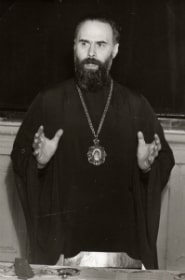
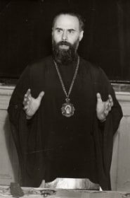
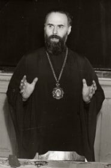
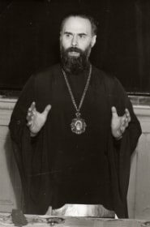

‘Chaos & Beauty’
Conference on the legacy of Metropolitan Anthony of Sourozh
Conference on the legacy of Metropolitan Anthony of Sourozh
Saturday October 26, 2019


 



 
The ‘Metropolitan Anthony of Sourozh Foundation’ is holding its eighth conference on the legacy of Metropolitan Anthony of Sourozh, to take place at St Sava’s Church Hall, 89 Lancaster Road, London W11.
Entitled ‘Chaos and Beauty’, the conference will reflect on Metropolitan Anthony’s understanding of chaos as potentialities, and the ways in which this relates to our experience of life, of God, of one another and the world. We include below his own words on chaos – words which remain vital and relevant to the challenges we face today.
There are several aspects in chaos: a disorderly, disorganised state; the destruction of a pre-existing order; and lastly, the fact that God created a world that held infinite possibilities, a chaos pregnant with perfect Beauty when it will be ultimately unfolded; and that God called out of “possibility” (the original “chaos”) all that was basic or mature, and left it to men to help all other “Possibilities” to unfold and form a Cosmos, i.e. Beauty Unfurled and Revealed. I compared this Primaeval Chaos to the cell, which in the womb develops into an organised grouping of cells, then into a foetus, and ultimately matures to become a child who in his own turn will grow into full maturity - ideally into the “full measure of the stature of Christ”. To organise, to freeze such a chaos, to stop its unfolding into all that it can become is a temptation, because, then, the chaos is tamed, subdued, enslaved and holds no fear for us; but it is the end of its becoming…
Metropolitan Anthony of Sourozh
Programme and application form will follow in August. The day will run from 9:30 a.m to 7:00 p.m., with Talks, Films and Round Table, breaks for tea and lunch, wine and refreshments at the end. Teas, Wine & refreshments are provided but please bring your own sandwiches for lunch.
Booking is essential. Places are limited.9:30 Coffee and Registration
10:15 Morning Programme (two talks)
12:15 Lunch
1:25 Afternoon Programme (two talks & short film of M.A.)
3:30 Coffee & Refreshments
4:15 Round Table
Open discussion on themes arising in the conference.
5:45 Film: M.A.
6:10 Panikhida (prayers for the departed)
6:30 Wine & Refreshments
I. Father Dragos Herescu
Cambridge
II. Mary Cunningham
Oxford
III. Revd Dr John Binns
Staffordshire
IV. Revd Deborah Walton
Staffordshire
To reserve a place please contact us and we will send Programme and Application form to you when they are finalised in August.
As demand is high, we encourage you to apply early, and at latest by October 14, 2019.
After that please check with the organizers by telephone or e-mail (below) to see if places remain.
No tickets are issued, but once booked your names will be on a list at registration.
Directions:
The Conference will take place at:
The Church Hall of the Serbian Orthodox Church of St Sava
89-91 Lancaster Road, London W11 1QQ.
The Church is located a few yards from the junction with Ladbroke Grove.
Buses:
7, 23, 52, 70, and 452. 'Ladbroke Grove Station' bus stop is 150 metres from the Church.
Tube:
Ladbroke Grove Station is 200 metres from the Church. Holland Park station is a 15 minute walk away. Notting Hill Gate and Royal Oak are a 20 minute walk.